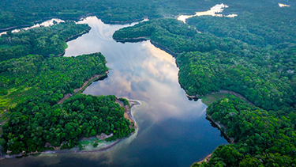

Atualmente uma das principais causas dos desencontros da sociedade com a natureza se da pela falta de informação, seguida da falta de racionalidade e o silêncio da exploração em massa. O PLEB luta pelo controle de áreas de preservação, a fim de manter segura a fauna e flora brasileira, tendo como o seu maior projeto a defesa e proteção da Amazônia como patrimônio nacional; e ao mesmo tempo, maior foco em programas de reflorestamento, a fim de manter, não só o Brasil, mas também o mundo todo mais seguro e saudável.
Multas para empresas que estejam poluindo o solo, ar, água, matas ciliares e qualquer tipo de fauna ou flora e pesquisas de comburentes viáveis que não prejudiquem o meio ambiente também serão implementadas.